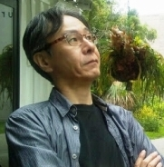

| 「無貨幣社会」創造のための思考実験 | |
| 岡 謙二 | |
| Word Lights (2016) | |
｢無貨幣社会｣
創造のための
思考実験
岡 謙二
200 8 年の秋か ら 200 9 年初頭にかけての、嵐のような世界経済の崩壊現象を前にして、私は思わず考え込んだ。
貨幣の流通を伴わない社会の創造は、本当に不可能なのか？
私は、それが「可能である」という仮説を、どうしても立ててみたかった。そして、自分の思考の中で実験を試みた。これは、そうした思考実験の結果である。
これは「思考実験」だが、「空想」ではない。「可能である」という仮説を立て、思考実験において私なりに確認した以上、私は、これが「実現可能」だと考える。だが、思考実験である以上、異説を歓迎したい。また、論理の飛躍や矛盾があれば、それを訂正することも歓迎したい。もし本稿を「稚拙である」というなら、その理由を明示してくださることも歓迎する。
人間とは、イメージすることを実現する存在である。それが大前提だ。
ここでいう無貨幣社会とは、「その内部にあって、貨幣の流通がないコミュニティ」のことであり、また、「貨幣社会との関係において、貨幣の流通を持って価値を交換しないコミュニティ」のことである。しかし、今日まで世界各地で実験し、あるいは行われてきた、原始共産的な、あるいは閉鎖的な「理想郷」を意味してはいない。
その無貨幣コミュニティ建設のための思考実験にあたって、次のような設定を設けた。
なぜなら、私はこの現代に生きており、自分を含む人間を愛しており、この世界や地球を憎んではいないからだ。
＜改稿について＞
本稿は 、 2 1 世紀初頭のアメリカ経済に端を発する世界的な経済破綻状況の中で考察されたものである。だが、＜現代文明の上に無貨幣社会の実現は可能か＞という、それが思考実験であったとしても、私が知る限り、これまで誰も論考してこなかった試論を展開しているという意味においては、今後もなお有効性を発揮すると、私は考えている。
本試論は、論考当時の世界情勢をもとに書かれているし、論考自体がきわめて概論的であるが、それでもなお本質的な意味においては、今後もなお通用すると考え、世界情勢や名称等は当時のままにしている。
201 4年3月 3 0 日
岡 謙二
目次
|
1 . 経済とは何か...経済の隷属下にある人間 2 . 貨幣とは何か...虚構としての貨幣 3 . 世界経済安定のための「政治介入」 4 . 「無貨幣コミュニティ」建設の前提条件 5 . 無貨幣コミュニティ」とは、どのようなコミュニティか 6 . 「無貨幣コミュニティ」の維持･拡大と防衛 Leeさんへの謝辞 |
5 9 15 18 22 28 32 |
...経済の隷属下にある人間
「経済」、また「経済活動」とは、きわめて単純化すれば 、AとB との差を利用することによって利益（差益）を得ること、またそのための活動といえる。
明治以降の日本経済を見ても、農村や山村など、さらには中国や東南アジアなどの国家･地域の安い労働力 （A ）を利用してモノを生産し、そうして生産されたモノを都市や海外に高く売る （B ）ことで利益を生み出してきた。
その次には「イノベーション」が叫ばれ、サービスや技術、企業体質の差 （A 社 とB社: 自社の差 ・ A : 社会 と B : 自社や社会の差）などによる競争が提唱されてきた。さら にA という通貨 とB という通貨の瞬時的な価値の差、さらには、ある株価 のA 時点と、予測す るB 時点という時限的な差、を利用して利益を得るというまでに「発展」してきた。さらには、さまざまな金融派生「商品」が考案されるに及び、その時限的な差は、情報技術と情報網の発達により必然的に極度に短縮され、民衆化され、一瞬にして貨幣価値や株価が上下し、実体経済に影響を及ぼすにまでなっている。
「実体経済」という言葉は、つまりは資本主義の根幹である「株や先物、為替、その他金融派生商品全般」の取引とは「虚構経済」そのものであることを物語っている。それは結局、貨幣という「虚構の産物」によって動く「資本主義経済」とは、虚構によって組み上げられたもの以外の何ものでもないことを示しているといって差し支えない。
そして現在の事態とは、資本主義経済の発展の結果そのものである、ということができる。資本主義経済は、本質的に「このように進展する」ことを不可避にしているシステムだからだ。
アダム・スミスの「見えざる手」が経済の安定と発展に機能する、という古典的な楽観論は、その振幅の幅が経済活動そのものを機能不全に追い込むに至り、過去の経済学とならざるを得なかった。しかし経済社会は、瀕死の床にあってなお、アダム・スミスの「予言」にしがみ付かざるを得ない。「経済発展」なる指標は、有限の世界にあって、無限に続くものなど何もないことを誰もが暗黙のうちに知っているにもかかわらず、なおも「有効性」を発揮している理由は、そこにある。
「カネがカネを生む」という無限連鎖的な事態は、少し冷静に考えれば、ほんらい奇妙な現象である。つまり、まっとうな考えを持ちさえすれば、それは「虚構」である、という認識に至るはずだ。
虚構は、その虚構性ゆえに、さらに新しい虚構を生み続けようと働く、という増殖本能を持っている。しかしそれは、ほんらい虚構であるがゆえに、必ず、やがては自己崩壊に至ることは、過去や今日の出来事を見れば一目瞭然である。
アメリカが生み出したマネー増殖システムの代表として、マルチレベルマーケティング （ ML M ・日本ではネットワークビジネスなどとも呼ばれる）がある。これは無限連鎖などありえないにもかかわらず、無限連鎖による巨利を謳い上げるシステム（法によって「無限連鎖」には一定の歯止めはかけられているが）であり、会員の勧誘活動も、主導的な会員の行動も、その行動原理の本質は、「巨利を得る」ことそのものにあり、彼らの時間はそのために費やされ続ける。つま り ML M は、その本質において、「経済に人間を従属させる活動」そのものといって差し支えない。
ML M を主宰する企業が、つねに声高に「ヒューマンで豊かなコミュニケーション」「カネによる幸福」「健康・福祉や社会貢献」を訴えざるを得ないのは、結局は、それらを訴えることを止めた途端に、自らの本質が露呈してしまうことを恐れているからに他ならない。
したがっ て ML M においては、それを主宰する企業の構成員も主導的な会員も、自分たちの持てる時間の大半を、「巨利を得る」ための行動に消費せざるを得ないのは当然である。この行動原理は、マネーゲームに狂奔する人々にも共通していえるのではないだろうか。
何のために生きるのか？
自然の中で育つ現地の住民が、巨利を得たセレブに尋ねた。
「なぜそんなに必死に働くのか？」
セレブは答えた。
「こんな大自然に囲まれた中で、余裕のある暮らしをするためさ」
現地の住民が言った。
「私たちは、すでにそうしている」
これは、有名なブラックジョークである。
アメリカが主導してきた第二次大戦後の経済活動とは、この「経済に人間を従属させる」ことを、より一層鮮明化させてきた歴史であったといえるだろう。そうであるゆえに、今日の危機的状況とは、「人間が経済を主導する」歴史への転換の大きなチャンスともなりうるはずである。
とりわけサブプライムローン問題以降のアメリカ経済の破綻は、この「経済に人間を従属させる」という本質を抜きに語ることはできない。虚構が生んだ虚構、さらにその虚構が生んだ虚構......による無限連鎖的発想のワナにはまったアメリカは、それでもまだ「見えざる手」への信仰を捨て切れず、ブッシュ大統領の「公的資金の投入」も、嫌々ながらの決断であったと指摘されている。アメリカは、この危機を主導した当本人として、結果的に、個人も企業も国家も、経済に隷属した存在であったことが暴かれた、とさえいえるのではないのか。
これは本題から外れるかもしれないが、アメリカのこの子どもじみているとさえいえる「見えざる手」への信仰は、「アメリカとは神の国である」という建国信仰に他ならないと思える。アダム・スミスの説いた「見えざる手」とは、つまりは「経済活動にも神の手が存在することの証明」であったからといえるからだ。アメリカ保守を代表するペイリン副大統領候補は、大統領選の結果について「神が、（大統領に）ふさわしい候補を選択する」ときっぱりと述べていたのは周知の事実だ。
しかし「神が守りたもう世界」は、まぎれもなく終焉した。アメリカは謙虚に、その冷徹な現実を受け入れなければならい。
...虚構としての貨幣
「貨幣」が、なぜ「虚構の産物」なのか。
ここでは、貨幣、紙幣、電子マネーなどを一括して、「貨幣」と呼ぶことにする。貨幣は、一般的に次の機能を持っているといわれる。
Ａ 交換媒介機能
間接的な交換の手段となって商品の流通を助ける機能。
「売」と「買」に分かれる。
「商品」は売買によって市場から姿を消すが、
「貨幣」は繰り返し流通する。
Ｂ 価値尺度機能
商 品A と商 品B の価値の差を、価格の差に交換できる。
貨幣は「（常態においては一応）一定の価値を保つ存在」
として機能する。
Ｃ 価値保蔵機能
貨幣は「価値を保存する」機能を果たす。
貨幣の保存は「価値の保存」であり、金融活動の元となる。
通常、貨幣（通貨）とは、「交換」の媒介役を果たし、それを持っていると、いつでもどこでも何らかの商品と交換できる、便利なシロモノである、ということになる。
また、経済活動は、「価値の差」を新しいより大きな「価格の差」に移行させることで、より大きく発展させることができる。
さらに、とりわけ資本主義経済における諸経済活動は、貨幣の価値保存機能に依存して成立している。
そして、物々交換経済から貨幣経済へと移行したのは、文明の進展と共に必然の歴史であった、というのが一般的な解釈である。
しかし世界史的には、資本主義経済の急速な進展、つまり大量消費を求める大量生産、そのことによる「巨大な富」の蓄積という、きわめて近代における急変が、貨幣経済を世界に席巻させた、ということにほかならない。
実体経済にまで影響を及ぼし、世界恐慌の現実化さえ取りざたされるに至る現在世界の様相は、結局は「貨幣とは虚構の存在なのだ」ということを、我々が否応なく認知せざるをえない状況に至らしめている。
貨幣経済においては、「人間の命」を含む一切のモノとコト、具象世界や抽象世界、さらには時間や空間といったものまで、すべてを「貨幣価値」に換算されうるものとして機能している。
企業の売買の次には、「国家」の売買にまで、それは発展する様相さえ垣間見えた。ロシアが小国アイスランドに巨額の融資を持ちかけたことは、結局は、同国をロシア権益内に取り込もうとする動きであり、国家そのものの買収とさえ思われる動きであったからだ。
世界の基軸通貨としてのドルへの信頼が大きく揺らぎはじめた今日、中国が「人民元」を次の基軸通貨にしたいと虎視眈々と狙っているという。その実現の可否は、ここでは問わない。
しかし中国とは、世界史上はじめて、一党独裁体制の中に、見事に資本主義経済を持ち込むことに成功した国である。その経済は、したがって自由主義的ではなく、統制経済的であり、経済成長率が鈍化したとはいえ、いまだ成長を続ける国であり、内需拡大の要素も他国と比べて潜在的に非常に高く 、1兆8 千億ドルの外貨準備高を誇り、すでにアフリカ諸国などに強力な覇権を推し進めている。日本の麻生首相との会談で、中国の胡錦濤主席は、「アメリカのドル（機軸）体制の崩壊は望まない （ 2008/10/2 4 ）」との声明を発表したが、それは中国の強い自信の表れではあっても、アメリカへのすりよりではないことは明白である。
中国は、世界経済におけるこれまでの失敗を参考にしながら、新しい資本主義のあり方を提示しようとしているのかもしれない。コミンテルンの時代は遥か過去に遠ざかり、中国は、アメリカに代わって、「主義思想」ではなく「経済」によって世界制覇を狙っている、というわけである。
もっとも、この行動の背景には「軍事力」という暴力装置による暗黙の威圧という「陰」が存在することを忘れてはならない。
経済発展を遂げる中国が急速に軍事力を高めつつあり、北朝鮮が核開発を「武器」に経済支援を強要することは、この原理に沿っているからといえるだろう。
「経済」と「軍事」、あるいは「経済力」と「軍事力」は、日米安全保障下の日本を含め、国家という竜の、「陰（軍事）陽（経済）の双頭」であり、相互に補完関係にあるという現実を見逃してはならないということである。
それらはつまり、今日の経済活動が、「人間への信頼」に根ざしたものではなく、「人間への不信」に根ざしたものであることを物語っている。
貨幣の誕生は、確かに、物々交換社会における「欲求の二重の一致」という制約（穀物を持つ人が皿を望み、穀物と皿の交換を欲求するなら、皿を持っていて、なおかつ皿と穀物との交換を欲求する人とでなければ、交換は成立しない、という制約）から脱皮することを可能にした。
しかしそれは同時に、「貨幣」という「抽象価値」を、あたかも「実体価値」であるかのように錯覚させる機能を有していたのである。かつて、金などとの定率交換を保証されることで、一定程度安定していた貨幣の「価値としての安定性」＝「金などの固有物へと定率で実体化し得るという幻想性」は、今日では、金本位制の廃止などによって、すでに破られているだけではなく、貨幣（カネ）の無人格的で制御不能な一人歩きや暴走を許し、本来、貨幣を支配していたはずの人間と人間社会を狼狽させ、不安に落とし込めるまでに至ったのだ。
かつて「見えざる（神の）手」によって安定と発展が保障されていたはずの経済システムは、こうして実は、神の威光が衰退した現在、きわめて人為的（人間社会的）で、その先には人為さえも超えた不安定で破壊的な様相を内在させたものであることが露呈してきた、といえるだろう。
貨幣が「価値」を持つと思われているゆえんは、貨幣が、「現代」から「未来」へ、さらに「ここ」から「他方」へと、同じ価値を持つであろう、という楽観的予想に、人間や人間社会が支配されているからにほかならない。貨幣が貨幣であり続けるためには、それを貨幣として受け入れてくれる人や人間社会が、時間的にも空間的にも未来永劫に渡って存在し続けるだろう、という「予想」によってはじめて可能なのだ。
しかし、そのような予想は「正しい」のだろうか？ 歴史を少し紐解けば、その予想が、ことごとく裏切られ続けてきたことが分かる。それでも、なおそうした「幻想」によってでしか、経済活動は成り立たないのだ。
現実には、一晩のうちに数百倍にまで貨幣価値が下がる国家が世界に現存し、一晩のうちに円もドルもユーロも価値を乱高下させる現実を目の当たりにし、一晩のうちに革命や国家体制そのものの変革を伴うクーデターなどで、それまでの通貨が紙切れ同然になる歴史を経験しているにもかかわらず......どうしても、なおも、貨幣経済にしがみ付かざるを得ないという二律背反的で文明論的な宿業を、現代世界は本質的に有している、ということになるのだろう。
「政治介入」
これは、喫緊の課題として語るものであって、国家存在や資本主義経済などを無謬的に肯定して語るものではない。
今日の金融危機は、アメリカの「規制緩和」政策が主要な原因であり、政府の経済への無介入・放任主義が事態を悪化させた、と一般的に思われている。
しかし、ここでも「政治と経済が、本当に無関係であることなどあり得るのか？」という基本的な問いを発する必要がある。
サブプライムローンの焦げ付き問題は、「ローンの利子負担の税率解除」「不動産売買におけるキャピタルゲインの課税免除」などといったアメリカ政府の支援策があり、「政府が安全を保証している」という安心感がなければ、世界的な金融危機にまで膨らむことはなかった、という論調がある。つまり、ほんらい、アメリカ政府の経済への介入と支援があって、はじめてこれらの問題が起きたと解釈される。
国家における政治は、自国民に安全と安定を保障する機関である限り、また自体制を守ろうとする機関である限り、必然的に経済活動に介入する。したがって、国家や政府の市場への介入か不介入かを問題にすること自体が間違っているのであって、「どのように介入するか」こそを、問題にしなければならない。
どのような政治介入が妥当なのか、は、非常に高度な知識と知恵、経験と冷静な判断がなければ不可能である。したがって、ここでは、その具体的な内容にまで踏み込むことはできない。
しかし、世界経済を安定させるならば、世界の経済を主導する国々が一体となった政治介入が不可欠である、とだけはいえる。今ほど、世界各国が、「世界経済の安定」という一つの目的に、強い意志で共同参画しなければならないときはない。
もちろん、そうした強い意志での政治介入が、かりに実現したとしても、世界経済の混乱は、そうやすやすと収まることはないだろう。
その理由は、資本主義経済が、今日ほど高度に「発展」を遂げた時代はないのであって、その結果として、今日の金融市場があるからだ。
ひとたび実体経済から離れて独り歩きをはじめ、「虚構」という幻想が幻想を連鎖的に生み出してしまった金融経済は、それを修正するのには、膨大な時間と人的資源、国際的な協調と協力が求められている。しかし、それほどまでは（つまり「信頼」によって国家間などが結びつくまでは）、今日的世界は成熟しておらず、「悲劇」や「惨劇」が起きてはじめて「修正」や「訂正」に動く、という人間社会の構図も、これからもまず変わることはないだろう。
基軸通貨を一国の通貨に頼ることをやめ、世界銀行が発行する「世界通貨」を流通させる必要がある、といった意見もある。それは、正しい意見だ。しかし、エスペラント語が決して世界の共通言語にならない理由と同様に、世界通貨なるものの実現に、ただちに可能性を見出すことは難しい。人間とは、現在と直近の未来の予測によって行動するのであり、自己の利害を考える存在だからだ。その本質を否定することは、愚かでさえある。
しかし、それでもなお、人類は未来を信じて行動することを止めてはならないことも、自明の理である。「生命は進歩を本源的に求める」という生命の行動原理＝生命原理を、人類は決して手放してはならないのだ。愚かさを愛し、受け入れ、その上にさらに高次な未来を構築する。そうした「現状から未来を紡ぎ出していく」という変革こそ、真に世界を変革し得るのではないか。もちろん、斬新的、あるいは革命的なアイデアを放棄してもならないことも当然だ。
建設の前提条件
貨幣が「虚構」であることは、前に書いた。
しかし、ここに、根源的な問題が提起される。
それは「はたして人類は、貨幣が虚構であることを知りながら、なおどうしても、その虚構にしがみ付かざるを得ないのだろうか？」という問い。そして、「無貨幣社会の実現とは、否応なく文明の後退を意味してしまうのだろうか？」という問いである。
ここでは、「そうではない」という観点からの考察を展開したい。私は、ドンキホーテであってよい。
本試論は稚拙である、という反論に、私は反論しない。なぜなら、本試論が「机上の産物」であることは間違いないからだ。だが、反論する方には、その代わりに、ぜひ対論をお寄せいただきたい、と私は強くメッセージする。今日、「評論」たる行為は、「未来を拓く」ものでなければ、「悪」や「敗北」の加担者にさえなるだろう。
したがって私は、「不可能」や「不可視」といった、固く閉ざされているかに見える扉の前で、すごすごと引き下がることを良しとしない。私は、本試論が、その扉を開く「鍵」かもしれない、と、ここに謙虚に提出したい。扉は、開かれるためにそこにある。
無貨幣社会とは、いわずとも「物々交換社会」を意味している。
小さな村落共同体を作るなら、最低限度の食物の自給は可能だろう。最低限度の食物の自給さえ可能であれば、たとえ閉鎖的であっても、その村落共同体は一定期間存続することは可能だ。しかし、それだけであれば、その共同体における文明は、間違いなく「現代文明からの後退」を意味してしまうだろう。困窮に耐え、欲望を制御し、コンピュータを放棄し、電子を媒介とするコミュニケーションや文明を放棄し、一般社会からの隔絶を求めるなら、それは可能だということである。
しかし、それは、現代文明の否定・拒絶ではあっても、さらに高次な文明を築くことに貢献するわけではない。
しかも、そのようなコミューンを望み続け、拡大させることは、不可能に近いと思える。現代文明に生きる我々は、すでに「欲望の解放」を体験し、便利さを享受し、時空を短縮させる術を手に入れてしまっているからだ。現代文明とは、交通・流通の発達、建築と資源掘削技術の発達、電子的なコミュニケーションの発達などによって、四次元的に構築され、四次元的な短縮に突き進んでいる文明である。
現代の都市に生きる人類は、そのおかげで多くの生命的機能＝視力・聴力・味覚といった五感、さらには、いわゆる第六感などといわれる、直近の未来に危険などを察知する「近未来予知」といった動物的な本能に加え、総合的な見識力・知恵・理解力・識字力といった人間社会に必要な機能さえ、衰退する機運にある。
人類は、決してこの現状を放置してはならない。
したがって、ここでは、人類がさらに高次な文明を創造するための、「現代文明の否定を意味しない無貨幣コミュニティの創造」の可能性について考えたい。
① 現代文明との衝突や忌避では一切なく、むしろ積極的に交流と共存を図ること。
② 高度な現代文明の良質な側面を、積極的に受け入れること。
③ 豊かで高次な精神性を確保するために、一級の芸術･技術を求め、創造すること。
④ 教育を中心に、人類の未来を創造する人間を育成すること。
⑤ 人間がほんらい持つ生命力・人間力を回復させ、自然との共生関係の回復に寄与すること。
⑤ 上記の要件により、貨幣社会を中心軸とする現代文明にも有益であり続けること。
これらの前提条件は、いかにも矛盾と混乱に満ちているかのように思える。しかし、これらの前提条件がない限り、この地上に「無貨幣コミュニティ」を創造し、存続させ、発展させることは困難であろう。
受容・創造・共生。その繰り返しのうちに未来を創造すること。無貨幣コミュニティ建設の可能性は、ここにある。創造とは、破壊や忌避によってもたらされるものではない。
どのようなコミュニティか
ここで提唱する「無貨幣コミュニティ」とは、反文明的な隔絶社会の創造でも、ユートピア建設の夢想でもない。
人間原理
このコミュニティの運営は、何よりも「人間原理」に貫かれる必要がある。それは、経済･企業･国家などの幻想体を上位に運動する現代社会に対して、人間をまず中心に置くコミュニティの建設に他ならないからだ。「人間原理」とは、ここでは、国家・民族・宗教など、あらゆる今日的な権威に対して、それらの最上位に「人間」また「生命」を位置づける原理、と解釈していただければよい。
食物の自給
まず、必要最小限の「食物の自給」は確保されなければならないだろう。どのような困難な状況でも耐え得るコミュニティこそ、基本である。
農業や牧畜業は、まず自給のために最低限必要な、また、人間が健康体として生きる規模・内容が、どのようなものであるかが算出される必要がある。
初期投資
建設に当たり、初期に必要な施設の建設、太陽光エネルギー（電力）などの恒常的な供給を可能にするためには、初期投資が必要になる。これは、貨幣経済の中で蓄財され、あるいは贈与された資金でまかなわれる。
現代文明の否定ではなく、そのより高次な発展を求めての「無貨幣コミュニティ」の建設であるなら、こうした形態の初期投資を恐れる必要はない。
教育機関
コミュニティの中心になるのは「教育機関」である。
必要な教育とは、子どもに対してのみ行われるものではない。人類の未来を担う子どもたちへの教育は当然中心だが、コミュニティを構成する大人たちに向けても、常に繰り返し行われる必要がある（※「子ども」「大人」の定義づけは、深くは行っていない）。
子どもも大人も、その人権は尊重される。ただし、子どもに対する教育は、主に全人格的成長と基礎的な教養の習熟、個性の発揮などが主眼であり、学校教育が基本になることで「教育機関」が設立される。
大人に対する教育は、生涯教育であり、前述の教育内容の上に立ち、さらなる専門分野への挑戦を可能にするものとする。
自然との共生
農業・林業・牧畜・漁業などへの従事は、乳幼児を除き、各自の能力や特質を勘案した上で、自立的であることが確認された、ほぼ全員に（決して強制ではなく）義務付けられるのではないか。植物や動物を育て守り続けることは、自然との共生感覚を心身両面で知る上で、生きるということがほんらい歓びであることを知る上で、どうしても欠かせないものになるだろうからだ。
知の分業と協同
コミュニティでは、「対貨幣経済圏との交渉」「教育」「特化された専門分野」「コミュニティ内への物品の分配システムの維持」など、「知の分業」が図られる。
そして、コミュニティの成員は、協同して物事に対処し、納得して物品の分配を受け入れる必要がある。
そのための直接民主主義制と、多様性の受容を可能にするとすれば、こうした一個のコミュニティの構成人数は、おのずと一定の限界を持つことになるだろう。
知・アートの創造
コミュニティで創造され、貨幣社会へと流通させていく「価値」とは、「知」や「アート」「音楽」などの表現行為・芸術的なコミュニケーション行為（いわゆる芸術や文学。またそれに付随するすべての行為が含まれる）に求められる。
なぜ、アート（芸術）なのか？
それは、きわめて簡単にいえば、パン（食物）が人間の肉体を支え育むものであるなら、アート（芸術）とは、その精神を支え育むものだからだ。人間の営為としての文明は、宗教を土台として開化していった。アート（芸術）とは、人間の実在を、人間が生きているということの証明を、宇宙（あるいは宇宙規律）の本質に求め、また自覚的であるか無自覚的であるか、肯定的であるか否定的であるかを問わず、それを魂として創造してきたものだろうと、私は思う。
具象世界が実在するというなら、抽象世界もまた同じく実在する。
私は、パン（食物）とアート（芸術）の双方がなければ、人間は人間になりえないとさえ考える。
この無貨幣コミュニティで創造されたアートは、貨幣社会における企業や個人に対して、「高い価値」、あるいはまた「新しい価値」として認知され、取引され得る、既存のものとの「差」を持つものでなければならない。アートとは、現代文明においては、高い価値（貨幣価値）を持つ可能性を十二分に発揮するものである。
誕生した無貨幣コミュニティにおける初期段階では、そのアートは、きわめて貨幣経済的な価値観や今日文明的な色彩を、肯定否定を問わず、持つものとなるだろうことは明白だ。だが、どのような新しい文化も、土壌がなければ開花しえない。土壌を拒否して文化は発芽することさえない。
その無貨幣コミュニティから開花していったアートは、やがては熟練し、さらに発展し、貨幣経済世界に生きる人間には想起されることさえなかった、「まったく新しい価値」を持つにいたるだろう。そして、その「新しい価値」の、貨幣経済世界への浸透こそが、人間の文明の新しい地平を開拓していくことになる。この発想は、きわめて楽観論に彩られている。しかし、私は「人間への信」を手放さない。
それらのアートは、このコミュニティの創造や持続に協賛する企業や個人などに提供され、コミュニティは、対価として貨幣を受け取るのではなく、コミュニティが求める技術や物品などを受け取る。つまり「高度な物々交換」である。
その「高度な物々交換」は、貨幣社会に、「非貨幣的価値」、「無貨幣社会」を無難に持ち込む道である。
アートなどの精神的価値の創造、それらの価値を貨幣社会に向けて流通させる「物々交換システム」は、コミュニティを存続させる上で、もっとも大切な要素となるはずだ。
この社会での「富」とは、アート（芸術）であり、「知」であり、なによりもそれを創造する人間である。
コミュニティに生きる成員は、大人から子どもまで、決して二流や三流の物品・技術・アートや音楽などを強いられる必要はない。
むしろ、（とりわけ初期においては）積極的にそれら第一級の「文明の産物」を受け入れ、充分に享受しなければ、現代文明に「流通させる価値」となる、物品・技術・アートや音楽などを創造することはできないだろう。
最新のコンピュータを手にし、高級な家具調度品、第一級の音楽やアートに慣れ親しみ、しかも金銭に囚われない生活を実現させることが必要である。そのためには、高い精神性を維持し、つねに確認し、止揚・向上させていくコミュニティシステムの構築が、どうしても必要になる。安逸こそ、もっとも排除されなければならない。この排除は、非常な困難を伴うが、不可能ではない。
そして、アートなどの精神的価値の創造こそが、そのコミュニティの維持と発展に、もっとも有効な力になることだろう。
こうしたコミュニティの実現のためには、多大な知力と労力が必要とされる。しかし、その実現（あるいは実験）は、世界連邦・世界通貨の実現など、今日の貨幣経済システムの弊害からの脱却に比べれば、はるかに容易であると思える。
もちろん課題は山積している。生死をどのように取り扱うか、宗教の自由の全面的確保、医療の問題、性の問題など人間の欲望への対処......。
しかし、コミュニティの成員数を、「お互いの名前と顔を、お互いが知ることが可能な程度」、つまり国家や社会という「共同幻想」を生まない、視覚的な実体としての「顔」が確認される規模、に限定を設けるならば、これらの問題への対処は可能となるはずだ。つまり、最低限度 数 1 0 人からはじまった無貨幣コミュニティの建設は 、 100 0 人規模にまでなら拡大は可能となると思える（※この数字は計算されたものではない）。
維持･拡大と防衛
無貨幣コミュニティは、こうした小さな規模で最初、実験的に開始され、やがては、その成果を元に、世界の各地域でも形成されていくことになる。
もちろん、そのコミュニティは、「国家の内の小国家」、つまり「国家に対立する概念や規範を持つ社会体制」、と判断されてしまえば、たちどころに「国家」によって排撃されてしまう危険性を持つ。
また、そこから生み出す「価値」が高ければ高いほど、国家や企業が独占、あるいは支配しようと、触手を伸ばしてくる危険性も伴う。
｢知のネットワーク｣の構築
こうした危険や危機からコミュニティが身を守るためには、世界的な「知のネットワーク」に支えられる必要があるだろう。賛同・協力する知識人や指導者の数を絶えず確保し、そのネットワークを広げ、その「知のネットワーク」によって、コミュニティを「防衛」していくことが大切だ。
したがって、無貨幣コミュニティを建設するためには、まず、それを目指して、何よりも、この「知のネットワーク」を構築する必要がある。最初は数人からでもいい。まず、議論し、そして具体化に着手していくことだ。地球規模での「知のネットワーク」構築の必要性は、別に述べたい。ここでは、それは、この人類史的に困難な時代の閉塞状況を打開し、人類をひとつの惑星に生きるひとつの「地球市民」としてとらえ、またその意識を世界中の人々に啓発し、前提として「人間原理」「生命尊厳原理」に根ざした哲学や思考を持つ人々の連帯である、としておく。
そうした「知のネットワーク」は、コミュニティ内で「貨幣経済圏に流通する価値」を創造していくための、有力な「後ろ盾」ともなるはずである。また、その「知のネットワーク」は、無貨幣コミュニティの内部崩壊を阻止する、「監視機関」にもなる。
「知のネットワーク」の形成と確保は、こうして、無貨幣コミュニティの「防衛」「発展」「存続」に、重要な役割を担うことになるだろう。
では、もし、コミュニティ内で生まれ成長したアーティストが、貨幣経済圏に居住と活躍の場を移して活動したい、と願うような事態になれば、どうすればよいのだろうか？
答えは簡単だ。その要求に応えることである。貨幣経済を知らないそうしたアーティスト（アーティストに限定しない）には、貨幣経済とは何か、それが人間にどのような混乱をもたらしているのかなどを教育し、彼らが貨幣経済圏に出た後も支援を約束することだ。どのように状況や環境が変わろうが、信頼関係の維持に努めることだ。そうした彼らアーティストは、文化の相違や摩擦の中で、貨幣経済的価値に囚われない新しい価値を創造していく可能性に満ちているからである。
一ヵ所で無貨幣コミュニティが誕生し、成功し、成長しつつある事実が確認されれば、それを模範として、あるいは反省材料として、世界の各地に無貨幣コミュニティが誕生していくことになるだろう。各地には、各地にふさわしいコミュニティの内実がある。それらの無貨幣コミュニティは、各コミュニティがそれぞれの個性や特質を発揮して当然である。
それらのコミュニティは、「知のネットワーク」に支えられながら、非常に緩やかな連合体を構築していくことになるだろう。
100 0 年後 、 200 0 年後の人類の行末を見通すならば、こうしたコミュニティの建設・拡大は、非常に大きな意味を持つことになる、と思える。仮に、失敗に終わったとしても、その実験結果は、人類 の DN A 内部に深く記憶されることだろう。そうして、再び発芽をする可能性すらあるだろう。もし、世界が、「ひとつの価値」を共有しうる、つまり「まず人間が存在する」という人間原理、あるいは「まず生命を尊厳する」という生命尊厳原理の価値を共有しうる、そうした地球的な人類共同体に発展を遂げるとするなら、この「人間原理」が運営の根幹を成す「無貨幣コミュニティ」の建設と拡大の活動は、非常に重要なものになるはずだ。
以上、きわめて楽観論的にも見える、非常に大雑把な「無貨幣コミュニティ」創造への考察（思考実験）だが、可能性そのものは垣間見えるのではないか。
人間に対する無力感に満ちた絶望的な状況だからこそ、人間に対する信頼を持って対処することは、すぐれて人間的な生き方であるはずだ。「明日、世界が滅びようとも、今日、りんごの木を植える」行動が、今日ほど要請されているときはない。
＜了＞
無謀とも思える、本試稿のアップロード、および「地球市民的思 考 (http://wordlights.blogspot.com/ ) 」というブログを立ち上げたとき、最初に最大級の賛辞をくださったのは、サブボディ共振塾を主催す る Le e さんである 。 Le e さんは、ヒマラヤの麓にあって、人間の生命次元からの解放の可能性を探求し、実現しつつある、人類史的な先駆者であり、革命家であると、私は確信している。
Le e さんと私は、同じ父母によって産まれ、幼い一時期、同じ時空を生きた、つまり兄弟だ。およ そ 2 0 歳前後までの私は、優れて頭が良く感受性に富んだ兄であ る Le e さんに、強いコンプレックスを抱きながら、それでも彼の後を追わずにはいられなかった。詩作の集い、学生運動など、私はいつも、兄の後を追い、それでもまったく歯が立たないことに、さらにコンプレックスを倍増させながら、別の道を模索しはじめたものだった。
Le e さんは、まるで自己を脱ぎ捨てたい衝動に駆られるがごとく 、 2 4 時間以上もの水泳に、あるいはトライアスロンに没頭し、やがて舞踏をはじめた 。 Le e さんの家の一部屋は、本という本で埋め尽くされていたが、ある日突然 、 Le e さんは、それらの一切を捨ててしまった。だが 、 Le e さんは決して破滅することはなかった。
インドで舞踏の学校を建てる、というメールをよこしたまま行方の分からなくなっ た Le e さんに、私はある日、とても連絡が取りたくなった。そして偶然か必然かは知らないが、私 は Le e さんの主宰する「サブボディ共振塾ヒマラヤ （ http://www.subbody.com / ）」のホームページを発見し、連絡を取った。私 と Le e さんは 、 200 8 年の初頭、まるで草原で羊飼い同士が出会うかのように、大阪の地下街で短い会話を楽しんだ。それは、ほ ぼ 1 0 年ぶりの直接的な出会いであったと思う。そのと き Le e さんは、強い意志を持った創造者となっていたのだ。
兄弟。
それは、懐かしい響きのする、だが、とても温かい言葉だ。とりわけ 、 Le e さんが、私を「弟」と呼ぶとき、それはさらに温もりが湧き出す。不思議だが。
私 と Le e さんは、同じ一時期をともに過ごしたにもかかわらず、その幼児体験が異なる。記憶の内容も微妙にずれている。私 と Le e さんは（そして私の下にいる弟も含め）、ともに父母の愛をあまり受けることはなかった。だが、私には、母の、そして父の、愛とその温もりが今も伝わってくるし、とりわけ母の情熱と愛情が鮮烈な記憶として残っている 。 Le e さんには、決定的に母の愛、いや「母」という存在そのものが揺らいでいたのだろう。
それは、今では幸運なことである。私は、愛とふれあいについて考えをめぐらせ、そし て Le e さんは、人間の直接的なふれあいからはじめ、「舞踏」というキーワードを手がかりに、人間の肉体と精神の深層部に、つまり生命の本質部に到達しようとしているのだから。
も し Le e さんがいうように、私 と Le e さんが「共振」しているなら、それは、たぶん、こういうことだ。私自身についての謙虚さを踏まえずにいうなら、私は、人間生命をゆがめる現代都市にあって、逆に人間や生命について思索し、「自分自身がなお、より人間として生きること」と「人間の解放」を選択したのに対し 、 Le e さんは、仏法で「須弥山」という世界の中心たるヒマラヤの麓にあって、この地球文明に生きる人間を凝視し、解放しようとしている。立つ場所は異なるが、そこには、明らかに共振現象が起きるだろう。
私はまだ、ひとり の Ikedia n として、師の哲学を自分の中でどのように展開できるのかを模索しはじめたばかりだ。再度いうが、こうした論考の発表などが、きわめて無謀であることは、私がいちばんよく知っている。だが、船は港を出た。航海を続けよう。欠けている部分は、補えばよいのだ。一方 、 Le e さんは、すでに弟子がアメリカなどでも活躍し、厳然と彼の思惟と行動が「正しい」ことを証明しつつある。
私は、今 も Le e さんの後に続いていて、それはたぶんこれからも変わらない 。 Le e さんの精神は、私の上空はるかに、一匹の鷲のごとく飛んでいる。私は、これから も Le e さんに学び続けたい。私には、学ばなければならないことが、まだ無数にある。
Le e さん、ほんとうにありがとう。あなたの存在と行動が、私には強い勇気を与えくれる 。 Le e さんは、この地球上にひとり立ち、天と地をつないでいる。私もそうありたいと思う。
2009.2.1
Kenji Oka
＜岡 謙二＞ kenji Oka

文筆家・文明批評家
195 0年 1 2月 2 4 日生まれ。日本・神戸市在中
著書に『輝きの人生へ 』( 潮出版 社) 、『不滅のヒーロー･仮面ライダー伝説 』( ソニーマガジン ズ) 、『ピースボートの旅 』( リトルガリヴァー 社) など。出版プロデュース作品に『七重、光をありがとう 』( 河出書房新 社) 、『日本一の友情～富山県入善町編～ 』( 未来書 房) など
｢電子書籍｣に『 マスメディアとは何か ｢第四の権力｣という幻想 』『 民衆論－｢無名性｣の大地 』『劇場論』ほか多数